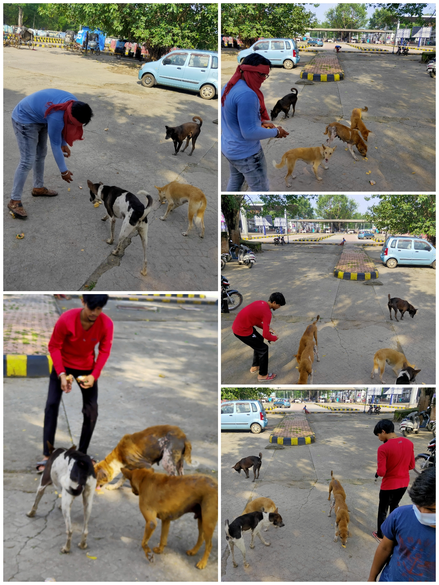
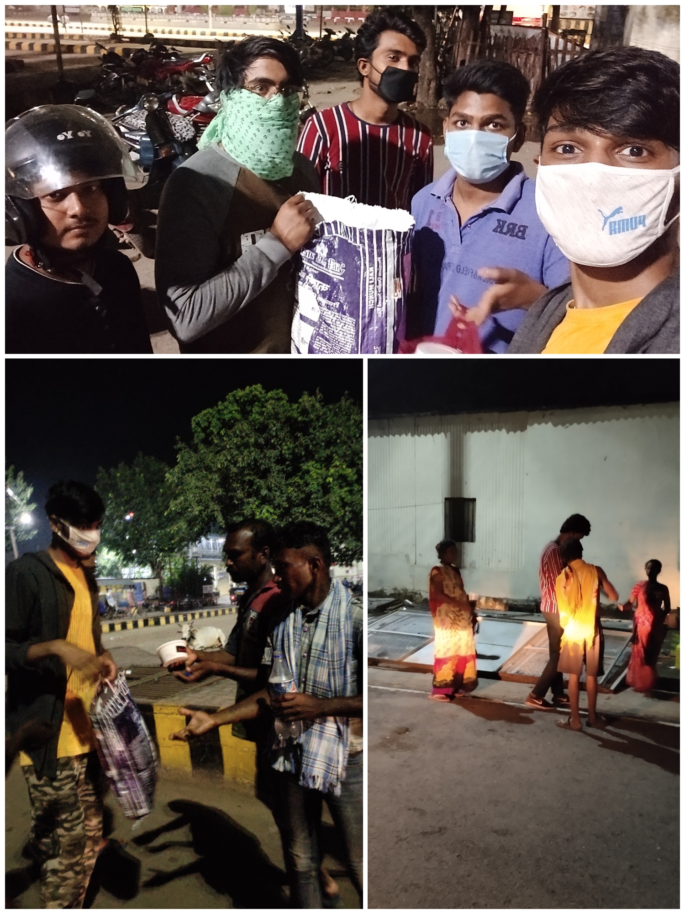
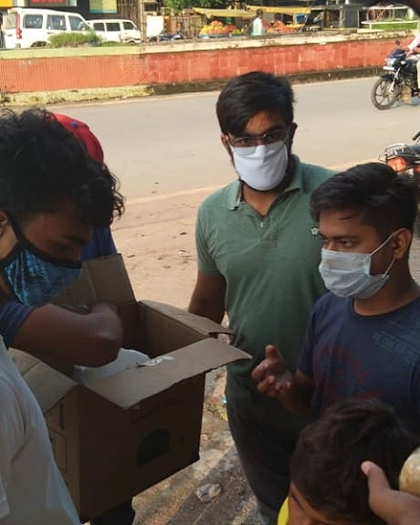
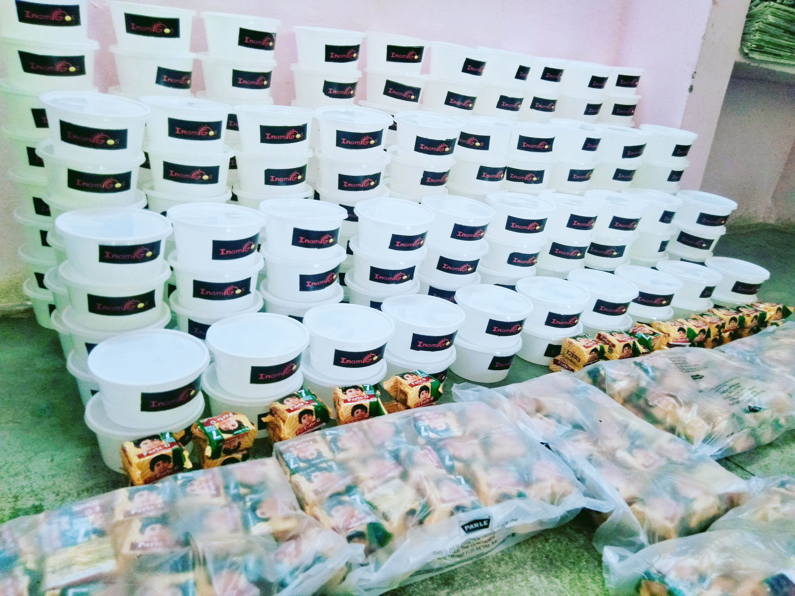
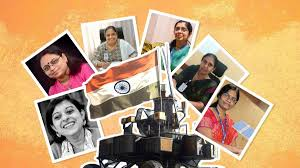

One mission. Many hands.
A more compassionate India.
Founded in 2020 by Govind Shukla, InAmigos Foundation turns everyday volunteers into changemakers — delivering food, education, dignity, and hope directly to the communities that need it most, across 28 states.
50,000+
Meals & clothing distributed
20,000+
Saplings planted
30,000+
Interns trained since 2021
200+
Active volunteers
Built by volunteers, run for communities.
InAmigos Foundation is a Section 8 registered non-profit headquartered in Bilaspur, Chhattisgarh, led by Founder & CEO Govind Shukla. Rather than operating top-down, it mobilises everyday volunteers, students and local self-help groups to deliver aid directly to the people who need it — with no layers in between.
Its work spans six focus areas — food security, children's education, women's empowerment, animal welfare, environmental restoration and youth employability — each addressing a specific, real gap in Indian communities.
Mission
To bring guided, collective action to education, empowerment, animal welfare and environmental causes across India.
Vision
A more inclusive, compassionate and empowered society, driven by communities that look after their own.
Values
Compassion, transparency, accountability and service before self — in every project, every rupee, every hour given.
Six focus areas, one direction: forward.
Every InAmigos project is built to close one specific gap. Together, they form a single connected effort across 28 states.
Project Seva
Regular drives that have delivered 50,000+ meals and clothing items to homeless and underprivileged families.
Project Bachpanshala
Closing learning gaps for underprivileged children through digital literacy, life skills, and school support.
Project Jeev
A daily volunteer network feeding 50+ stray animals and championing humane treatment of urban wildlife.
Project Udaan
Partnering with rural self-help groups on financial independence, vocational skills and hygiene awareness.
Project Prakriti
20,000+ saplings planted to date, alongside support for eco-friendly and sustainable farming practices.
Project Vikas
Internships that have equipped 30,000+ young people with skills in research, content and digital work.
MOMENTS FROM THE GROUND
What our volunteers actually do.
A glimpse from recent InAmigos drives — real work, real communities, real impact.




